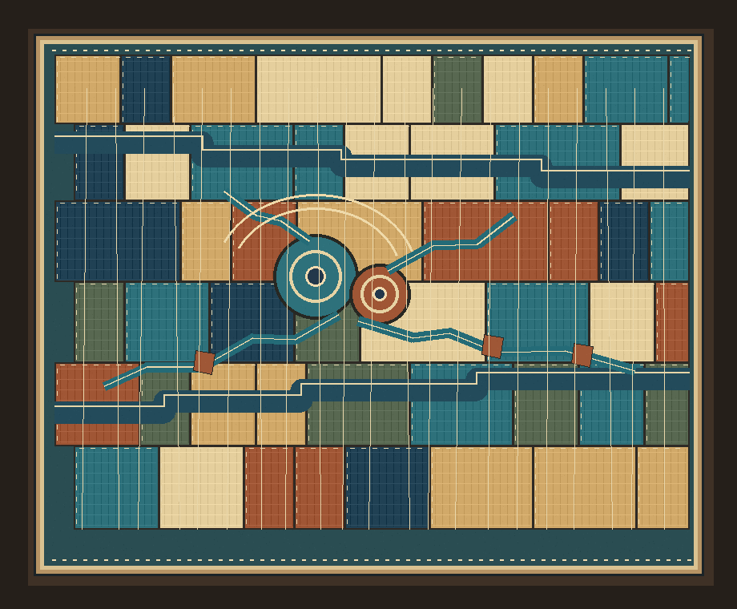

The Current Stitcher
An imagined water landscape assembled as a cloth map. Offset sources send narrow channels through irregular blocks; sewn routes and a bound edge hold the system within one textile surface.
An invented image informed by research into ancient Ma'rib's irrigation network. It is not a reconstruction of a specific site or a physical quilt.